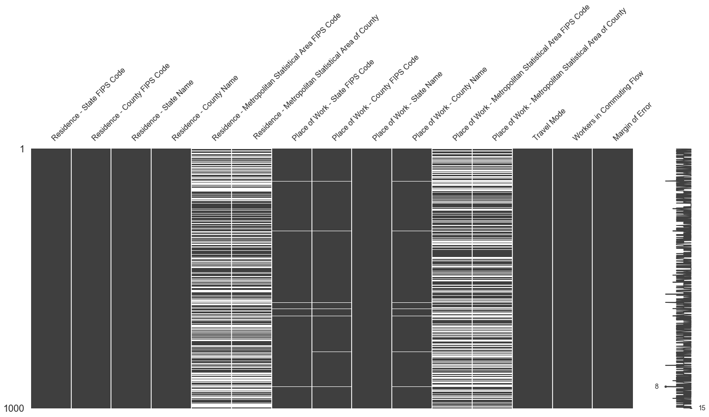
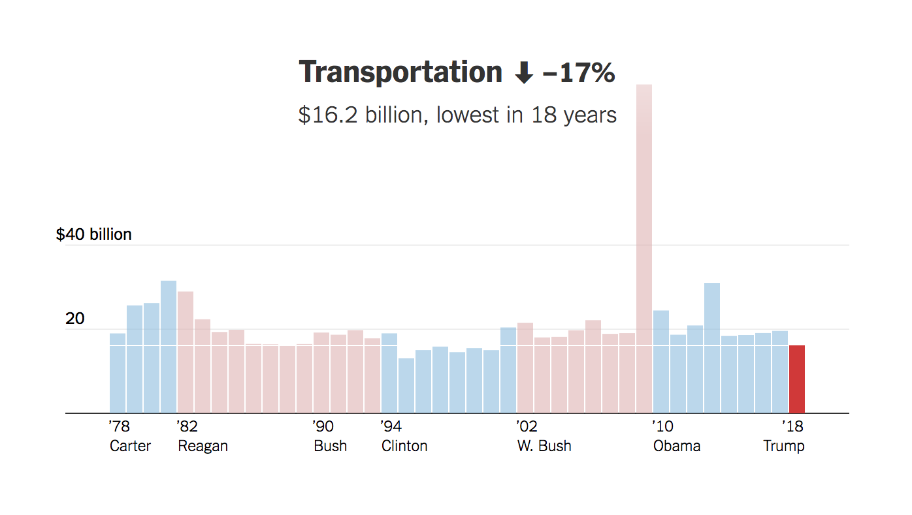
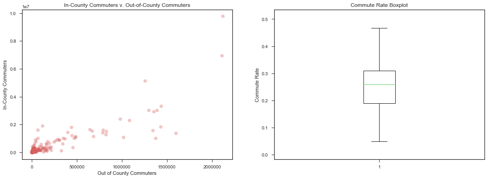
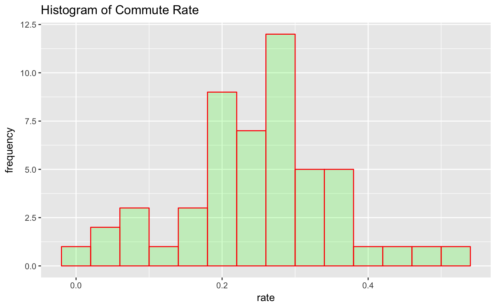
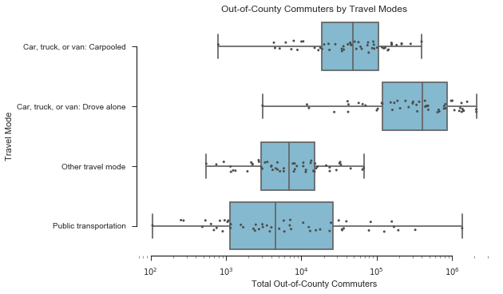
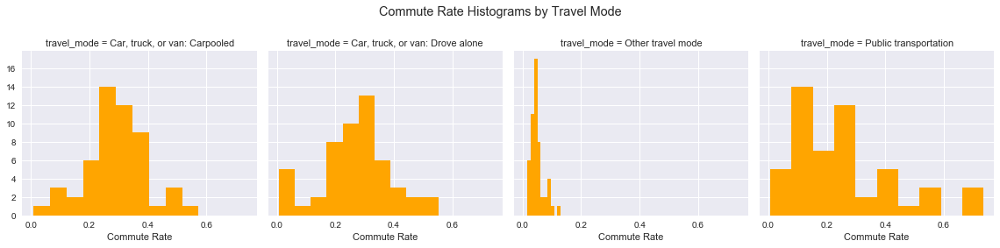
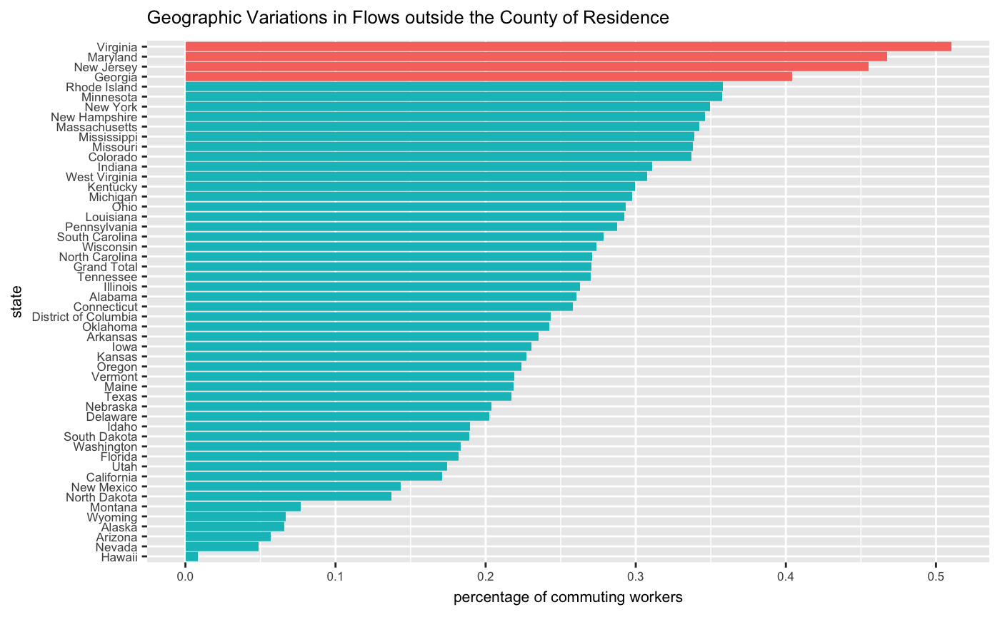
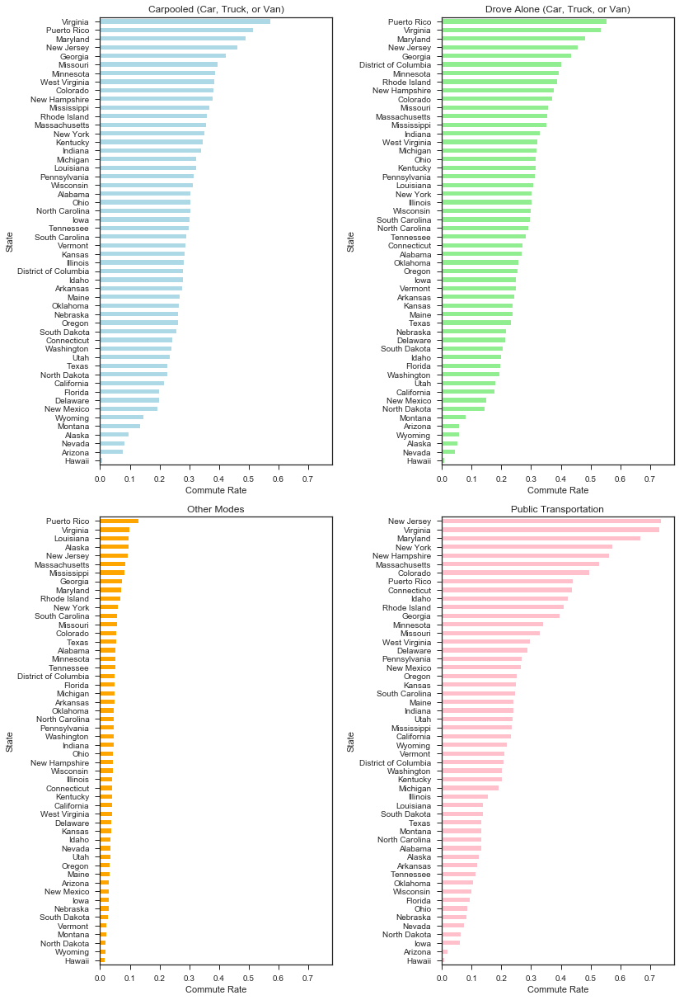

Introduction
On March 16, a budget blueprint released by the White House details President Trump’s preliminary plan to cut substantial funding for a number of federal agencies, including a 13% decrease for the Department of Transportation.
As transportation and smart cities enthusiasts, our team is concerned about the proposed funding cuts to transportation in Trump’s budget, which is currently the lowest in 18 years (source: New York Times).
The call for a $2.4 billion cut will impact the ongoing development of smart cities and public transportations nationwide, such as the government’s decades-long effort to get a light rail system off the ground and improve Amtrak's long-distance train service, "which long have been inefficient and incur the vast majority of Amtrak's operating losses," according to Fortune.
This concern motivates us to study the impact of the budget cuts on nationwide locations through exploring Amtrak data, as well as commute rates and flight data.
Our datasets are collected from open sources including census bureau, National Household Travel Survey (NHTS), and the U.S. government’s data portal. Readers will be able to find the data in particular using the following links:
- Commute Data:
- Flight Data:
- Population Data:
- Train Data:
Meet the Team
Members of The Geocoders are:
- Aditya Garg ag3741@columbia.edu
- Moorissa Meritseba Tjokro mmt2167@columbia.edu
- Will Connor Geary cg2111@columbia.edu
In exploring the data and transportation patterns, Aditya focuses on air transport (Flight Carrier and Air travel data), Moorissa on various modes of transportations on road such as cars/vans/truck/and public transportations specific to commute data, and Will on Amtrak/train data and populations dataset across the country.
We will map different plots on “before” and “after” budget cuts, discuss transportation patterns, and analyze how the decrease in funding will significantly impact the U.S. population. We are using Python for data extraction and manipulation, Processing, R and Carto for plots and map visualization, and also Javascript/SVG/HTML/CSS for the site display.
Data Quality
While values for the commute data are consistent and clean, an issue with the data occurred during import process. In handling the import process, we used the single-byte encoding 'ISO-8859-1' instead of the default 'utf-8', because there are characters from the file that do not represent Unicode characters, such as symbol like Š.
Furthermore, there are some missing values on the variables in the data, such as FIPS codes and statistical area of the county. However, since we are not using any of these information, we did not have to deal with missing values. Note that values in the variables we use, including 'Residence - County Name', 'Place of Work - County Name', 'Travel Mode', and 'Workers in Commuting Flow' do not have missing values.
 Missing value plot of the U.S. Census Bureau 2006-2010 County-to-County Worker FlowThe Amtrak timetable data was of high quality, thanks to Amtrak'a adherence to the GTFS format. Ridership data from the National Association for Rail Passengers was also very clean and straightforward due to consistent naming conventions for stations.
Executive Summary
“Crumbling infrastructure will be replaced with new roads, bridges, tunnels, airports and railways gleaming across our beautiful land,” Trump said during a joint address to Congress early this year.
His promise, however, seems to be counterintuitive towards his recent proposal to cut government fundings by $2.4 billion. It would eliminate federal funding for Amtrak's national train routes, which would risk disconnecting 145 million people for whom these routes are the only nearby Amtrak service.
The proposed cut would also eliminate billions in funding that would have otherwise gone towards new commuter rail and light-rail projects, as well as $500 million in grants intended for investment in new national transit infrastructure (National Association of Railroad Passengers, 2017). The following graph shows the White House budget cut in transportation compared to the years before.
The White House's proposed budget cut in transportation will have major impact not only towards the infrastructure of the country, but also public transportation users, labor workforce, and the access to aviation for people in the rural and remote communities.
Our findings show that Amtrak stations are most at risk in areas including New Orleans; Denver; Orlando; Tampa; St. Paul-Minneapolis and Atlanta. While areas that will impact major commuters would be those surrounding megalopolitan areas such as New Jersey, Virginia, Maryland, New York, and New Hampshire. Finally, the remote areas that will be the most impacted are around central U.S. like Michigan, Kansas, and Kentucky, where Trump received more than 50 percent of the vote.
Analysis
On Amtrak
The White House's proposed budget would eliminate federal funding for Amtrak's national train routes, which would risk disconnecting 145 million people for whom these routes are the only nearby Amtrak service. It would eliminate $2.3 billion in funding that would have otherwise gone towards new commuter rail and light-rail projects, as well as $500 million in grants intended for investment in new national transit infrastructure (National Association of Railroad Passengers, 2017).
Understanding the geography behind these numbers is crucial for making sense of them. First, we need to understand where Amtrak routes and stations currently exist. The map below overlays the Amtrak network on top of a population density choropleth map, so we can get a sense for the scope of Amtrak's rail network and the density of the places that it serves.
While the static route map above is helpful for understanding the geographic scope of Amtrak's network, it doesn't tell us anything about the frequency of Amtrak's service. The geovisualization below, titled Amtrak Before and After Trump shows one week of Amtrak trips as they currently exist versus one week of Amtrak trips excluding the 15 national routes that are threatened by the White House's budget proposal.
Routes on the chopping block include: Silver Star; Cardinal; Silver Meteor; Empire Builder; Capitol Limited; California Zephyr; Southwest Chief; City of New Orleans; Texas Eagle; Sunset Limited; Coast Starlight; Lake Shore Limited; Palmetto; Crescent; and the Auto Train. Noticeably, towns and cities in the Southeast and Midwest would be impacted the most, while large, coastal cities in the Northeast and on the West Coast would be impacted the least.
Next, let's focus on the stations that are at risk of being cut. The below dot distribution map titled Amtrak Stations at Risk displays each station that is at risk of being cut under the White House’s proposed budget. The size of each dot corresponds to the total number of passengers that each station saw in 2016 (including both departures and arrivals).
The busiest stations at risk include: New Orleans; Denver; Orlando; Tampa; St. Paul-Minneapolis and Atlanta. The least busy stations at risk include: Sanderson, TX; Thurmond, WV; Alderson, WV; Lordsburg, NM; Montgomery, WV; South Portsmouth, KY. The ridership data comes from the National Association of Railroad Passengers’ Ridership Statistics portal.
All python code used to wrangle Amtrak data is available here
On Commute Rates
While the above Amtrak analysis provided us with insights on areas with direct impact of the budget cut, we can use commute rates to further our observation on how it affects the workforce across the U.S.
According to Gizmodo Research Media Group (2017), the average commuter spends about an hour a day heading to and from work, but plenty spend as much as three hours commuting. Those hours spent in the car or public transportation have profound psychological and physical impacts on most U.S. workforce population. Transportation plays such a significant role in people’s daily commute, so budget cut on city transportation not only will impact the city infrastructure but also people’s way of commuting.
For the commute data from the 2016-2010 dataset of the census bureau, we have information on residence and place of work, each with state FIPS code, county FIPS code, state name, county name, metropolitan statistical area FIPS code, and area of county. Given travel modes and number of population, we calculated our commute rate by classifying the out-of-county commuters and taking its ratio with the total commuters.
The out-of-county commuting patterns provide a greater insight on the impact of Trump’s budget cut on transportation (e.g. the longer the commute distance, the more people are dependable on transportations), while many of the in-county transportation modes only captures walking distance.
The following scatterplot shows a correlation between in-county vs. out-of-county commuters. While most datapoints are clustered in the bottom left, the number of in-county commuters outnumbers the out-of-county for every residence. Most county residence has under 1.5 million in-county commuters and under 500,000 out-of-county commuters.
While the boxplot on the right shows that the median rate of the out-of-county commuters out of the total population is 26 percent, the histogram below shows that majority rates for commuters who leave their county of residence for work fall within 20 percent and 30 percent range, with peak around 24 percent.
Mean rate at 25 percent means that most regions in the United States have on average 25 percent workers who commute out of county. There is also sign of bimodality with a lower peak at 20 percent and distribution of data looks slightly left-skewed, with the median of 26 percent greater than its mean value.
This distribution represents an initial measure of commuting patterns, which would allow for comparing rate frequency after Trump’s budget cut. With the budget restriction on transportations, people might not be able to commute far away, which could result in a decrease in this commute rate.
Lets now take a look at distribution by travel modes from the following boxplot, where each datapoint represents a commuting flow from every county in the US. Majority of people use public transportation than cars, trucks, or vans. Other modes include bikes, motorcycles, and taxis. While there are counties with higher number of car-driver population, majority of commuters in counties across the states depend on public transportation the most.
The cut in funding will have a huge impact on nationwide commuters as majority use public transportation. The histogram below shows distribution of population by commuting modes.
Breaking it down further by states using barchart below, Virginia, Maryland, New Jersey, and Georgia (indicated by red bars) have over 40 percent residents leaving their home county to work daily. Modes of transportation recorded for these commuters are primarily car, van, truck, and public transportations.
Virginia, which leads the nation in residents who leave their home county to work, at over 51 percent, and Maryland, at 47 percent, have heavy emphasis on the Washington DC area and the federal employment complex. New Jersey is affected by nearby major job centers in Pennsylvania and New York; Georgia is affected by the major metropolitan multi-county, multi-state job complex that is Atlanta. Many of the areas with more than 30 percent leaving their residence county exhibit similar characteristics.
Since the Amtrak commuters is at a higher risk, taking further observation by the travel modes would allow us to see which state would be most impacted. For those who drive or carpool with cars, trucks, or vans, the top five areas with the most risk are Virginia, Puerto Rico, Maryland, New Jersey, and Georgia. While Puerto Rico and Virginia tend to have the most number of out-of-county commuters, Louisiana also seems to be at risk in the ‘other’ modes category.
Meanwhile, areas of impact for commuters who use public transportations such as Amtrak include New Jersey, Virginia, Maryland, New York, and New Hampshire areas. Public transportation is leading the rate.
Overall, the data illustrates the attractive power of major metropolitan areas, such as Washington DC, New York, and Pennsylvania. Commuters who work in these areas will get the most impacted.
On Air Transport
The Trump administration’s first proposed federal budget blueprint released on March 16 cuts down the USDOT’s discretionary budget by $2.4 billion, a thirteen percent decrease from last year. This proposed budget cut directly affects the air transport service in the US by proposing to restructure the Federal Aviation Administration (FAA) and eliminating funding for the Essential Air Service (EAS) program that subsidizes airline flights to rural communities.
Before we delve into analyzing the impact of these proposed cuts on the US air transport, we first try to understand the current distribution of airports and the use of air transport across different states by visualizing the active US airports and the annual air trips by people in each state.
Essential Air Service (EAS) Program
Essential Air Service (EAS) is a U.S. government program enacted to guarantee that small communities in the United States are able to maintain a minimal level of scheduled air service, which would be otherwise unprofitable. It is implemented through The United States Department of Transportation (USDOT) that subsidizes airlines to serve communities across the country that otherwise would not receive scheduled air service.
However, Trump’s proposed budget completely eliminates the funding for the EAS program. During the campaign for presidency, Trump promised to rebuild our ‘third world airports,’ but this budget eliminates air service to 173 rural communities. Trump expects the cut to save the government up to $175 million, however, for the 173 communities subsidized by the EAS program (as per the February ’17 report), the termination of the program would entail a lot of hardships.
In the map below, we visualize all the flight routes in the US and highlight the ones that include an EAS community in red.

As we can see from above, most of the affected communities and the flight routes are in mid-east and mid-west US (who, incidentally, are primarily Trump supporting regions). The 173 communities that would lose federal EAS funding under Trump’s budget, include communities in Alabama, Arkansas, Colorado, Iowa, Kansas, Kentucky, Michigan, Montana, Nebraska, Pennsylvania, South Dakota and Wyoming. In 86 of those communities, Trump received more than 50 percent of the vote, according to an analysis conducted by The Associated Press. Alaska, a deeply red state that backed Trump with 53 percent of the vote, is home to 61 EAS communities alone. The elimination of the EAS program would especially hit the subsidized communities in Alaska harder, where remote towns and villages are often completely dependent on air travel for supplies and travel.
In the map below, we highlight the EAS communities and the airports that are going to be impacted by the proposed elimination of the EAS program.
The most impacted state, based on annual subsidies, is going to be Michigan with subsidies being cut for 9 airports (Iron Mountain, Ironwood and Escanaba being the major ones). New York ( Plattsburgh, Massena, Watertown airports), Pennsylvania (DuBois, Johnstown, Lancaster airports) and West Virginia (Greenbrier, Morgantown, Beckley) are the other states that will be impacted the if the EAS program is scrapped off.
Conclusion
One of President Trump's campaign promises was to strengthen the United States' transportation infrastructure. His proposed budget, however, does the exact opposite. By eliminating $2.3 billion in federal funding that would have otherwise gone toward new commuter rail and light-rail projects, as well as $500 million in grants intended for investment in new national-transit infrastructure, Trump will take a step in the wrong direction. We should be working towards faster, cheaper, and more frequent connectivity between American towns and cities, not rolling back our transit infrastructure.